Stable Compendium record
worldsvault-templates
WorldsVault / recovered planetary architectures
Thirty templates. Twenty-one currently named.
The WorldsVault contains thirty stolen/recovered planetary templates. The supplied record currently names twenty-one; the remaining nine stay unspecified rather than being invented.
- Stable ID
worldsvault-templates- Structural type
- section
- Canon status
- unknown
- Spoiler level
- major
Published source content
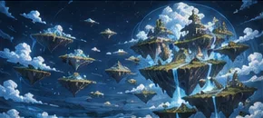
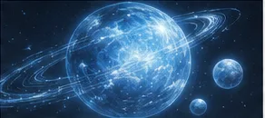
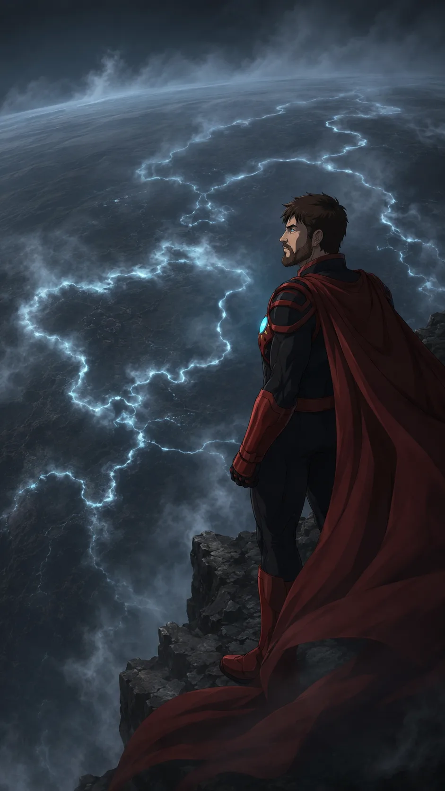
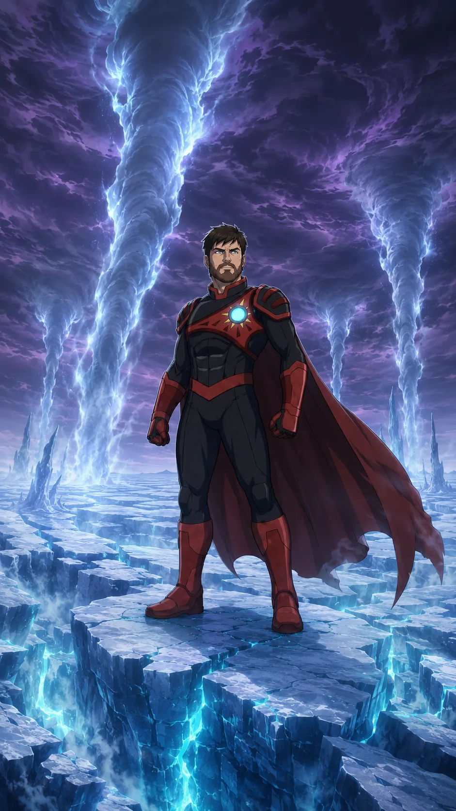
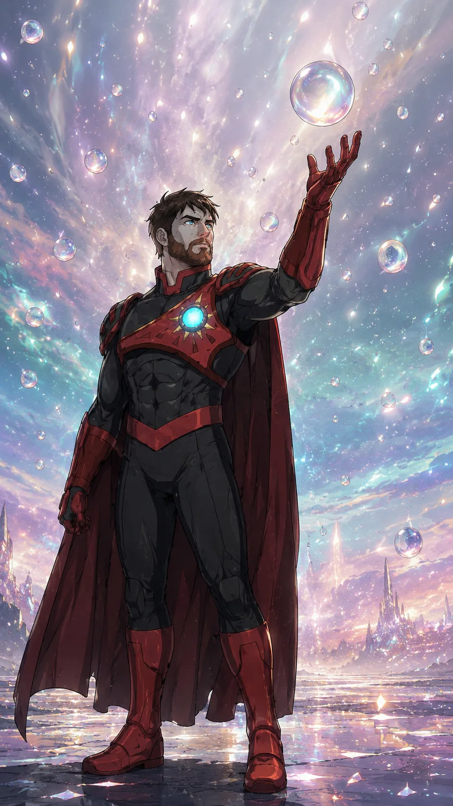
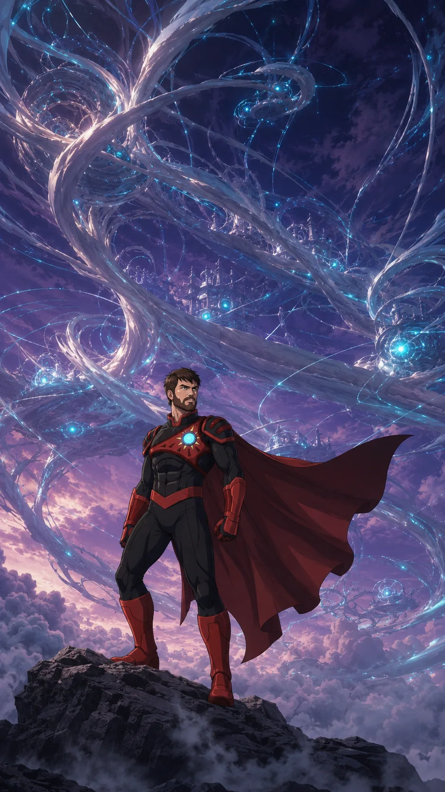
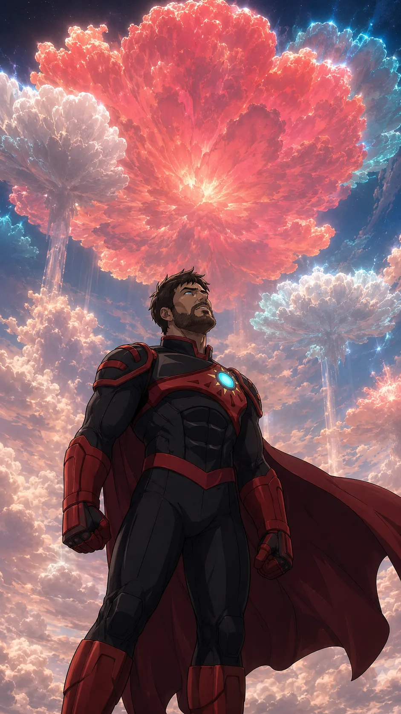
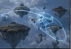
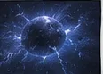
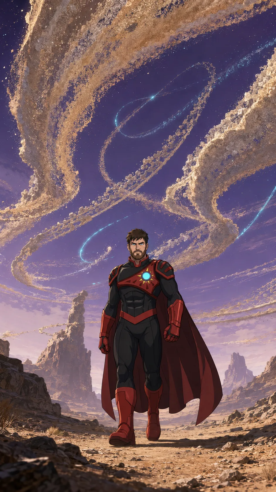
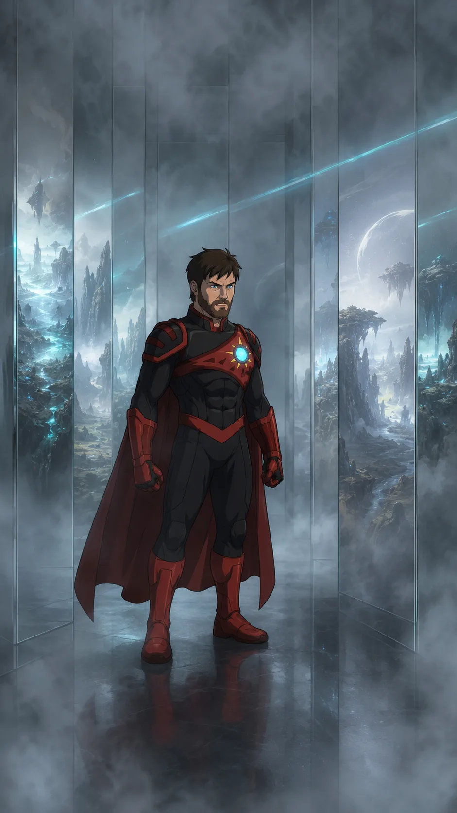
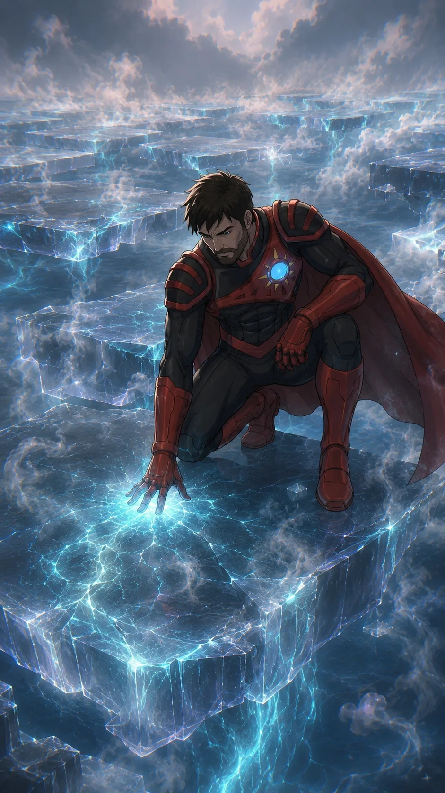
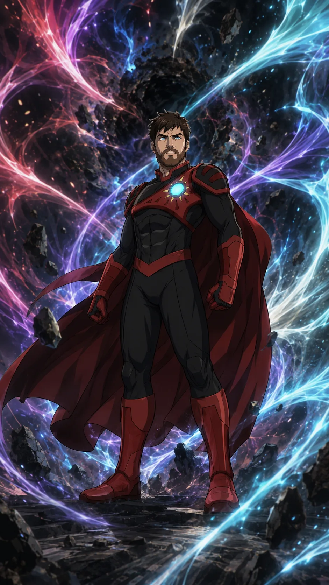
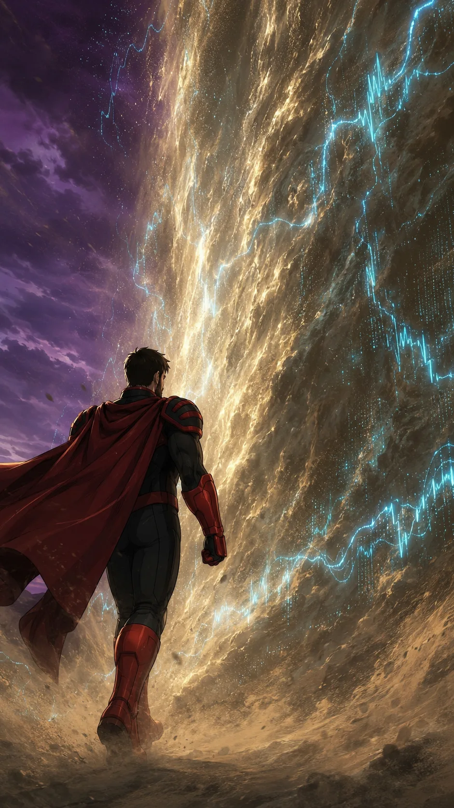
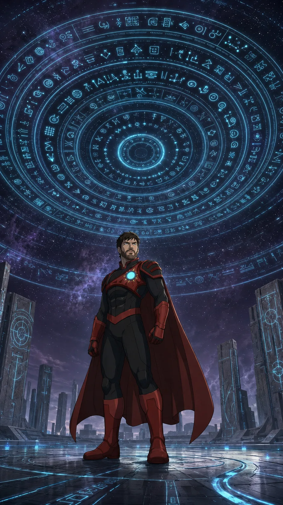
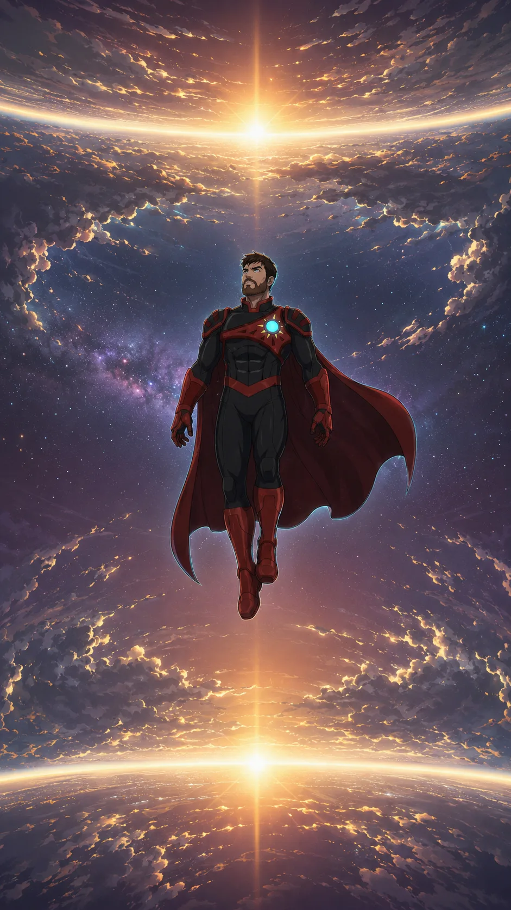
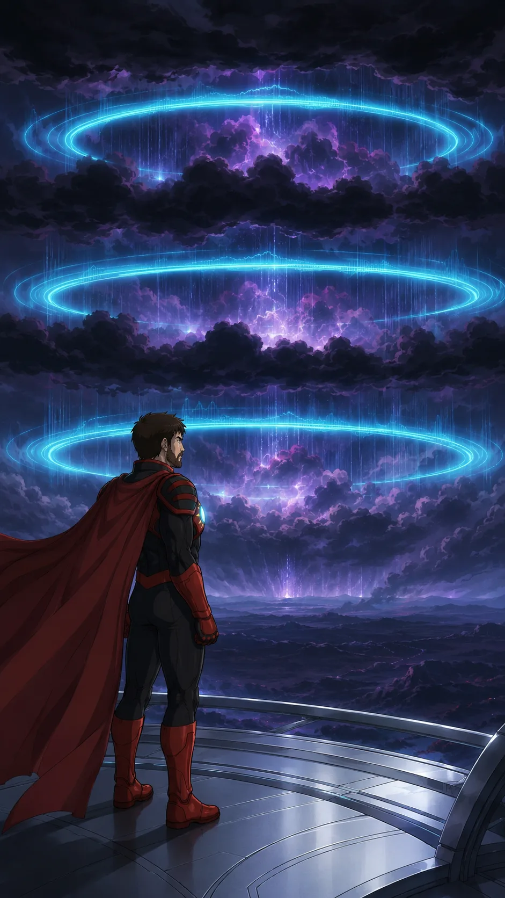
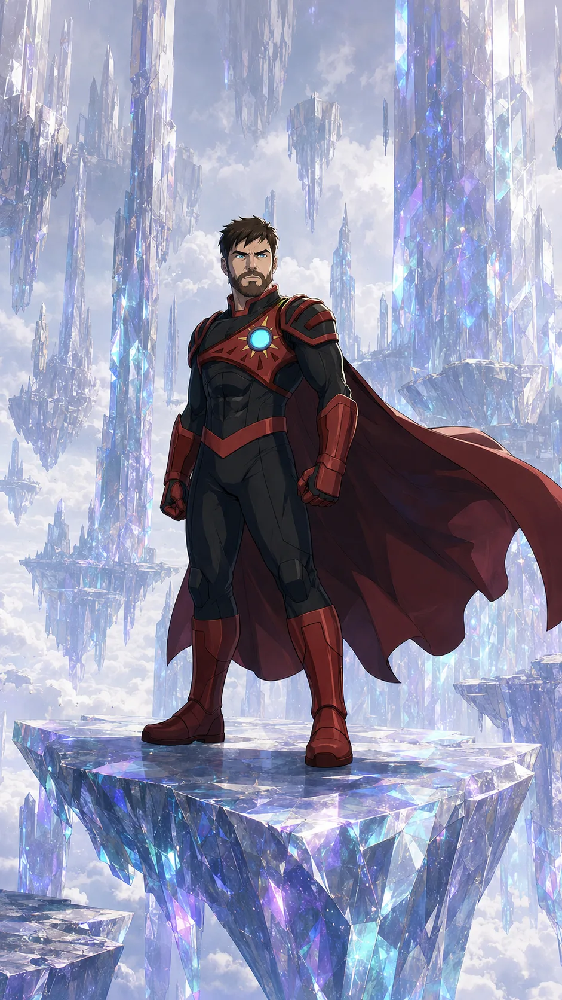